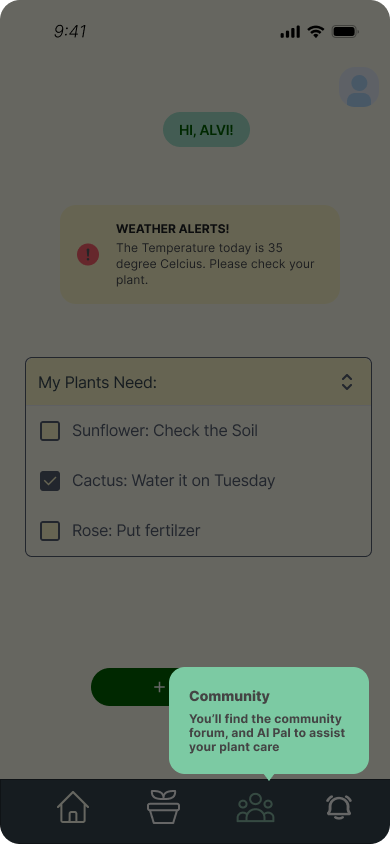
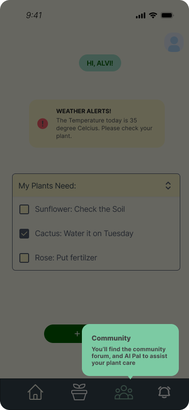
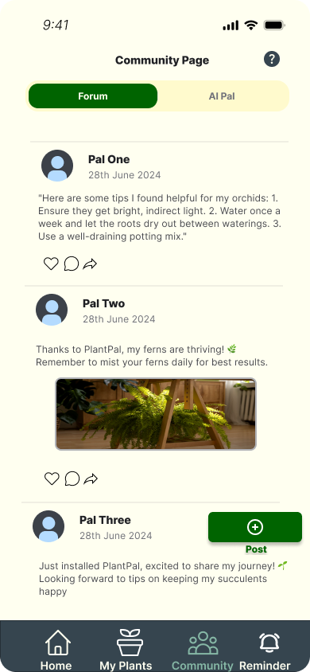
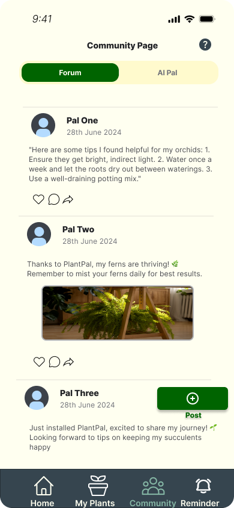
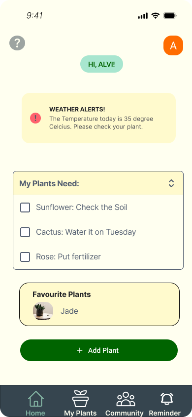
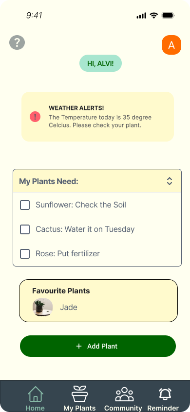

PlantPal is an iOS prototype focusing on user-centered design to simplify plant care for users aged 18–34. It
provides AI-driven suggestions, customized watering reminders, onboarding tutorials, and a community forum.
This app was designed through iterative testing and feedback loops involving real users.
Key Features:
AI-driven plant suggestions and reminders.
Tutorial screens and Help buttons for new users.
Community forum with styled interaction options.
Navigation with active states and improved icon clarity.
Content switchers refactored for local section updates only.
Responsibilities:
Developed low-, medium-, and high-fidelity prototypes in Figma.
Conducted surveys, card sorting, and usability testing.
Applied heuristic evaluation findings to improve navigation and clarity.
Refined user flow and visual layout across all app sections.
Challenges:
Lack of onboarding support and confusing navigation in early iterations.
PlantPal LITE is a lightweight Android-based plant care app designed to help users track watering and fertilizing
schedules. It provides a user-friendly interface for plant management while ensuring data persistence
through a Room database.
Key Features:
Add, Edit, and Track Plants – Users can add plants, set watering schedules, and receive reminders.
Room Database Integration – Ensures persistent data storage.
Jetpack Navigation – Smooth screen transitions with SafeArgs for passing data.
Material Design UI – Clean and modern Android user experience.
Responsibilities:
Developed user authentication, plant management, and scheduling features.
Conducted user testing and heuristic evaluation to refine UI/UX.
Challenges:
UI inconsistencies and confusing navigation.
Content switcher malfunctions.
Data persistence issues causing plant records to disappear.
Limited onboarding tutorials making it hard for new users.
Solutions:
Standardized UI components based on user feedback.
Fixed content switcher logic for smooth transitions.
Refactored database handling to ensure plant data remains persistent.
Added tutorial screens for better onboarding.
📌 Library Management System - Desktop App (Personal Project)
Tech Stack:
C#, .NET Framework, MVC Architecture, Dataset
Overview:
A Windows-based library management system that streamlines book reservations, borrowing, and returns. It is
built with an MVC architecture to separate concerns and enhance maintainability.
Key Features:
Book Reservation & Borrowing System – Users can borrow and return books efficiently.
MVC Architecture – Ensures modularity and easy maintenance.
WeekndWIK is a fan-based web application that allows users to explore and review The Weeknd’s music
discography. The platform features a responsive UI with interactive elements for enhanced user engagement.
Key Features:
Album Collection & Detail Pages – Users can browse The Weeknd’s music collection.
Responsive Design (Bootstrap) – Fully optimized for mobile and desktop viewing.
Dynamic Filtering & Navigation – Allows users to search and filter albums efficiently.
Interactive UI Components – Includes hover effects and dynamic elements.
Responsibilities:
Led sprint planning and managed Agile workflows.
Developed filtering and search functionalities for albums and songs.
Designed navigation bar and account settings page.
Developed User Review, Display Albums&Songs, and Random Track functionalities
Managed login and register backend using php
Setup Database and Hosting
Challenges:
Team delays due to inefficient scheduling.
Initial lack of real-time search functionality.
Inconsistent styling across different pages.
Solutions:
Revised team scheduling through structured Agile sprint planning.
Implemented real-time JavaScript filtering for better search experience.
Refined CSS and dark-mode styling for a seamless experience.


 

 

 
